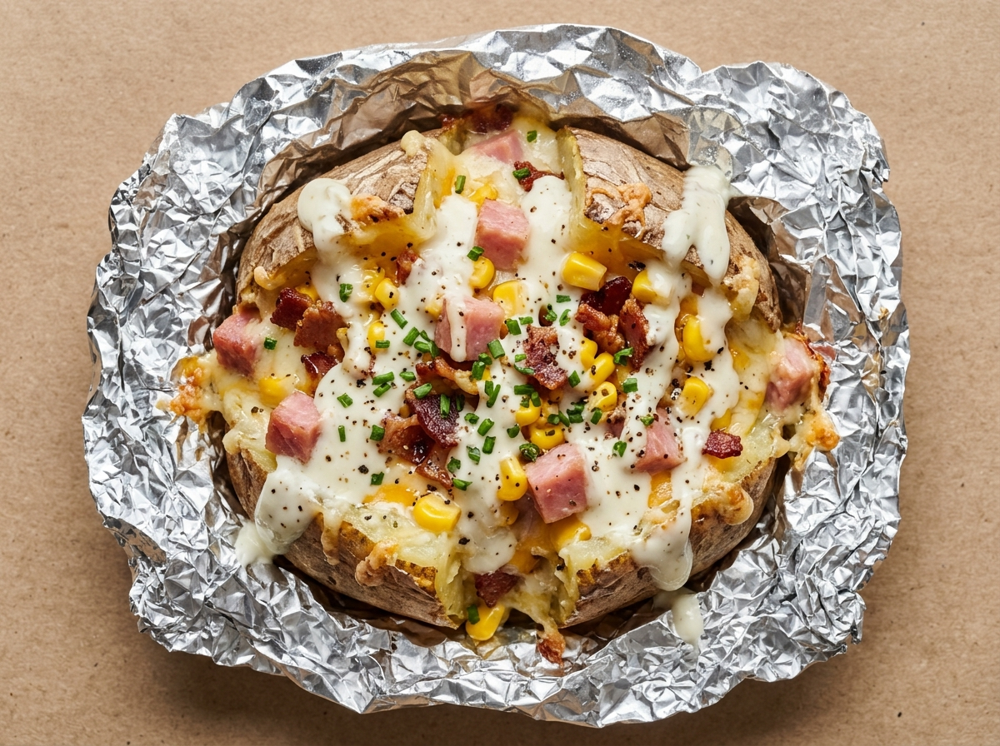

Calibre especial y horas de horno
Escogemos patatas de gran calibre que aguantan horas de calor envolvente. Por fuera la piel queda tostada; por dentro, pura crema.
En El Patatón de Avenida Venecia llevamos años haciendo las cosas sin atajos: patatas seleccionadas de tamaño descomunal, asadas lentamente en su papel de aluminio hasta quedar tiernas como mantequilla, abiertas al corte y cargadas hasta que cuesta cerrarlas.

Roquefort fundido, Alioli, Brava picante, Salsa Blanca Kebab, Rosa o Mayonesa coronando la mezcla.
Jamón en tacos, lomo adobado, bacon, carne de kebab, pollo relleno, atún, maíz, aceitunas, zanahoria y abundante queso.
Se abre en caliente y se trabaja el interior con mantequilla o aceite, ajo y perejil para que todo quede cremoso.
Asada lentamente en horno hasta que la piel tuesta y el corazón queda tierno. Conserva el calor hasta llegar a tu casa.
Quien es de Algeciras sabe perfectamente lo que pesa una bolsa de El Patatón cuando la recoges en el mostrador. No hay truco moderno que supere a un buen horno y mano generosa con el relleno.
Escogemos patatas de gran calibre que aguantan horas de calor envolvente. Por fuera la piel queda tostada; por dentro, pura crema.
En cuanto pides la tuya, abrimos el aluminio humeante, machacamos ligeramente el interior con mantequilla o aceite, ajo y perejil para que funda con el calor propio.
Desde la mítica de Roquefort con lomo, bacon y pollo hasta la Patata Kebab o el Patatón Completo con todo. Aquí nadie se queda con hambre.
Marca la salsa y los ingredientes que te apetezcan hoy. Te preparamos el ticket de comanda al instante con el cálculo de peso aproximado para que solo tengas que leerlo al llamar al 956 65 81 22 o guardarlo en tu móvil.
En Facebook avisamos de horarios especiales, festivos, sorteos y novedades recién salidas del horno. Si has cenado alguna vez en un banco o en casa abriendo ese papel albal que quema los dedos, ya eres de la casa.
Sigue nuestra página en Facebook para enterarte al momento de aperturas en puentes, fiestas de Algeciras y fotos reales de nuestras patatas recién hechas.
Visitar Facebook de El Patatón ↗“De toda la vida en Algeciras. Pides una patata al Roquefort o una Kebab y literalmente pesa casi un kilo. Con una cenamos dos personas de sobra.”
“La Patata a la Mantequilla y el Patatón con todo no tienen rival. Ingredientes hasta arriba, bien calentita en su papel de plata y trato cercano de barrio.”
“Además de las patatas asadas, los perritos calientes especiales por 3,50€ y el kebab de pollo están de escándalo. Relación cantidad-precio imbatible.”
Estamos en Avenida Venecia, 1 (Bloque 1, Local), 11205 Algeciras, Cádiz. Puedes llamarnos por teléfono para encargar y recoger sin esperas, o pedir a domicilio.
| Lunes y Martes | Cerrado (Descanso) |
| Miércoles y Jueves | 20:00 – 00:00 |
| Viernes y Sábado | 20:00 – 00:00 |
| Domingo | 20:00 – 00:00 |